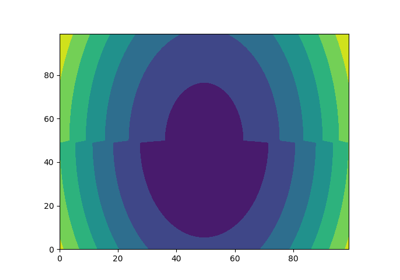
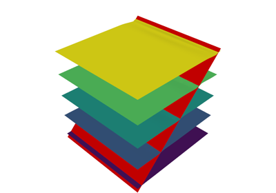

Examples#
1. Basics#


2. Modelling Folds#


3. Modelling Faults#

3a. Modelling faults using structural frames
3a. Modelling faults using structural frames


3c. Defining the fault displacement function
3c. Defining the fault displacement function